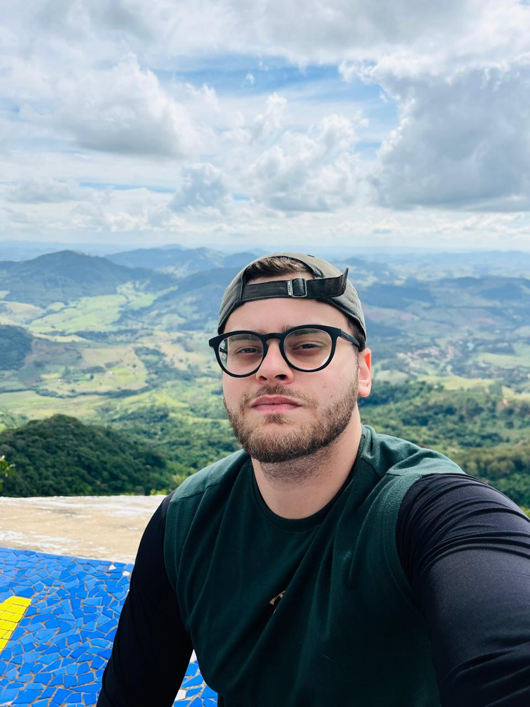

🛠️
Sistema de Chamados de Suporte
Sistema para registrar e acompanhar chamados de TI: abertura, status e histórico.
Ver no GitHub →Do Direito para a tecnologia: transicionei de carreira em 2024 e hoje atuo com suporte, infraestrutura e desenvolvimento, unindo visão analítica e solução de problemas.
Fale comigo Ver projetos
Quem sou eu e o que eu faço
Profissional de tecnologia com transição de carreira: bacharel em Direito, migrei para a área em 2024 movido pela paixão por resolver problemas com tecnologia.
Atuo com suporte técnico, manutenção de equipamentos e infraestrutura, além de desenvolver projetos pessoais em Java no tempo livre. O Direito me deu visão analítica e comunicação clara — habilidades que aplico todos os dias.
Projetos em andamento
Sistema para registrar e acompanhar chamados de TI: abertura, status e histórico.
Ver no GitHub →Gestão de patrimônio de informática, com cadastro de equipamentos e histórico de manutenções.
Ver no GitHub →Gestão de insumos e produção de marmitas, com receitas, baixa automática de estoque e alertas.
Ver no GitHub →Minha jornada acadêmica
Cursando, 1º semestre — previsão de conclusão para a metade de 2028.
Graduação concluída — formação que desenvolveu pensamento crítico, análise de problemas e comunicação clara. Em 2024 realizei a transição de carreira para a tecnologia.
Minha evolução profissional desde 2024
Primeiro emprego na área de tecnologia, com atendimento e resolução de chamados de suporte técnico nível 1.
Atuação terceirizada para a Prefeitura de Bragança Paulista na área da saúde, com manutenção de equipamentos de informática e resolução de chamados de suporte técnico nível 1.
Atuação terceirizada para a Prefeitura de Bragança Paulista na área da saúde, com atendimento a chamados de suporte nível 1 e alguns de nível 2, abrangendo sistemas operacionais, configurações avançadas, rede, softwares corporativos e diagnóstico de hardware.
* Atuação contínua na Prefeitura de Bragança Paulista ao longo de três vínculos consecutivos (estágio e duas terceirizadas).